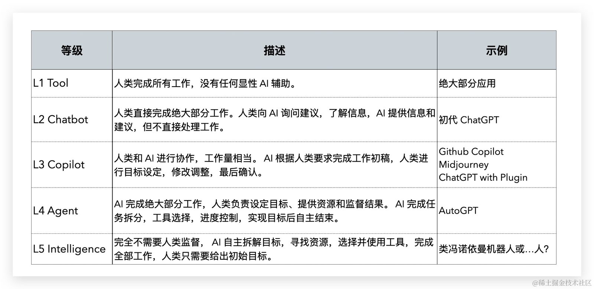

一、前言
在前面的章节中，我们系统地介绍了提示词工程的各种知识和经验。通过掌握提示词工程，我们能够有效地创建各种 Chatbot 或 Agent，从而提升工作、学习和生活的效率。然而，为了全面了解提示词工程，我们需要从时间维度审视其局限性和未来发展。
在本小节中，我们将深入探讨提示词工程的局限性及其背后的原因，并展望未来的发展方向，探讨可能的技术突破和创新应用。通过这些内容，你将对提示词工程有更全面和深入的理解，从而在实际应用中更好地掌握这一技术。
二、提示词工程的局限性
2.1 提示词的复杂性
《真格基金戴雨森谈生成式AI》)中提到，生成式 AI 应用分为以下五个等级：

戴雨森指出，当前 L3 和 L4 级别的 AI 应用具有更高的价值，但需要强大的大模型能力来进一步支持其升级。现阶段，大模型尚不足以支撑复杂的 Agent 开发，因此大模型的持续升级至关重要。Intelligence 级别的 AI 应用是完全自主的，无需人类监控，达到甚至超越人类水平，这是 AI 发展的最终目标，代表了最高程度的智能化和自主化。
尽管我们现在能够通过自然语言与大模型进行交互，但提示词往往承担了超出其能力的重担。理论上，如果模型足够强大，用户只需通过提示词表达清楚自己的要求即可，大模型便能自主完成任务。然而，由于当前模型能力有限，对于稍微复杂的任务，提示词编写者不仅需要清楚地交代任务，还需在提示词中指导大模型如何更好地完成任务，并根据结果反馈不断调整提示词。即使任务和指导步骤明确，大模型依然可能无法很好地完成任务。
2.2 提示词效果受限于模型能力和编写者的水平
众所周知，“木桶原理”表明，一个系统的整体水平由其最薄弱的部分决定。
提示词的效果直接受限于模型能力和编写者的水平。 例如，如果某任务的模型能力上限为70分，而编写者的提示词水平为50分，那么最终的效果也只能达到50分。此外，许多人在描述问题时难以做到客观、准确和完整，当用户提供的信息存在偏见、错误或不完整时，大模型的回答准确性会受到严重影响。因此，提升提示词编写技巧并尽可能使用更高级的大模型，是实现更好效果的关键。
2.3 提示词效率和模态问题
提示词的效率也是一个值得关注的问题。设想你开发了一个“相亲助手”，在与相亲对象见面时，希望助手能帮助你细致分析对话。为了实现这一点，你需要提供每次对话的详细信息，包括语气、表情和肢体动作的变化。然而，手动输入这些细节不仅耗时，还会降低效率。尽管通过不断调优提示词可以提升效果，但目前提示词调优的自动化程度较低，效率难以令人满意。
虽然许多模型已经支持多模态输入，但部分所谓的多模态大模型实际上只是将语音或视频转换为文字处理，丢失了大量细节，且成本更高。
2.4 语言和文化差异
提示词在不同语言和文化背景下的表现存在差异。模型对某些语言的理解和生成效果较差，可能影响提示词的准确性和实用性。此外，不同文化背景下的用户对同一提示词的理解可能存在差异，导致结果不一致。因此，跨语言和文化的提示词编写需要更多的技巧和调整，以确保结果的准确性和一致的用户体验。
2.5 隐私和安全问题
使用提示词时，隐私和安全问题不可忽视。模型在处理敏感信息时，可能存在隐私泄露的风险，特别是在涉及个人数据或机密信息的场景中。编写者需要格外谨慎，确保提示词不会导致意外的信息泄露。此外，提示词可能被恶意利用，生成有害或误导性的信息，从而带来安全隐患。
三、提示词工程的未来展望
3.1 短期
在短期内，由于模型能力尚未实现质的飞跃，且AI基础设施尚不完善，提示词工程仍将发挥关键作用。掌握提示词工程技能显得尤为必要。当模型能力不足时，我们需要明确地描述任务，并指导大模型如何更好地完成。面对高度定制化的场景，当前阶段的自动化提示词创建和调优功能很难满足需求，提示词调优技巧尤为重要，以便高效地创作和优化提示词。当出现异常情况时，还需通过提示词工程进行快速调整，确保模型的有效性和准确性。
3.2 中期
从中期来看，随着模型能力的不断提升和AI基础设施的持续完善，提示词的自动化程度将显著提高。大语言模型能够基于用户的描述自动生成提示词，并要求用户进行必要的补充。此外，模型还能根据用户的反馈自动调整提示词，从而形成一个闭环，以实现更好地效果。
同时，随着 AI 眼镜、AI 手机、AI 操作系统等相关硬件和软件的不断涌现和升级，提示词工程将发生显著变化。例如，在相亲场景中，佩戴AI眼镜后，无需输入大量提示词即可记录整个过程，并通过大模型进行分析并提供建议。随着硬件和软件的进步，能够记录的信息越来越多，提示词中需要提供的背景信息将逐渐减少，而模型输出的内容也将更符合个性化需求。
3.3 长期
从长远来看，随着模型能力的持续增强和AI产品的逐渐成熟，提示词的局限性将逐步被克服，其自动化水平也将大幅提升，这可能会导致提示词工程的重要性有所下降。然而，由于隐私和安全方面的限制，大模型无法获取所有的个人信息。即使大模型发展到接近人类水平，我们与大语言模型的沟通仍然不可或缺，尤其是在高度个性化和复杂的场景中，提示词工程将继续发挥重要作用。
四、总结
本文探讨了提示词工程的局限性，具体包括以下几个方面：
-
提示词的复杂性：当前提示词不仅需描述需求，还需承担额外的任务。
-
提示词效果受限于模型能力和编写者水平：提示词的效果由模型能力和编写者水平的最低值决定。
-
提示词的效率和模态问题：编写和调优提示词的效率较低，多模态效果不理想。
-
语言和文化差异：不同语言和文化背景会影响提示词的效果。
-
隐私和安全问题：提示词需要考虑隐私和安全，避免信息泄露和误导性信息生成。
文章还展望了提示词工程的未来发展。在短期，提示词工程依然至关重要；在中期，随着大模型技术的发展，提示词的局限性将逐步得到解决，其重要性可能会下降。然而，长期看，由于隐私和安全性的考量，大模型不可能获取所有信息，在高度个性化和复杂的场景中提示词工程仍将继续发挥重要作用。
你认为提示词工程还有哪些局限性？对未来提示词工程的发展有何看法？欢迎在评论区留言讨论。
COMMUNITY NOTES
读者评论
这篇文章暂时没有读者留言。